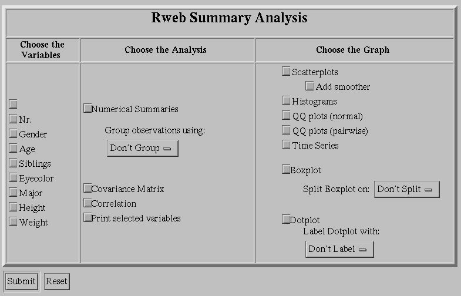

Web-based Statistics:
Lecture 10
Tuesday, May 23, 2000
An Introduction to Rweb
Rweb is a Web-based interface into the statistical analysis package R.
R itself is a non-commercial package that has been developed by
Robert Gentleman
and
Ross Ihaka. Its source code is almost
compatible with S or Splus. If you know any of these
languages it should be easy for you to use R and Rweb.
Main References on R and Rweb
- Banfield, J. (1999):
"Rweb: Web-based Statistical Analysis",
Journal of Statistical Software, Vol. 4, Issue 1.
- Gentleman, R., Ihaka, R. (1997):
"The R Language",
Computing Science and Statistics, Vol. 28, 326-330.
- Ihaka, R. (1998):
"R: Past and Future History",
Computing Science and Statistics, Vol. 30, 392-396.
- Ihaka, R., Gentleman, R. (1996):
"R: A Language for Data Analysis and Graphics",
Journal of Computational and Graphical Statistics,
Vol. 5, No. 3, 299-314.
Some References on S and S-Plus
- Becker, R. A., Chambers, J. M., and Wilks, A. R. (1988):
"The New S Language",
Wadsworth & Brooks/Cole, Pacific Grove, CA.
- Chambers, J. M. (1998):
"Programming With Data",
Springer, New York.
- Chambers, J. M. and Hastie, T. J. (1993):
"Statistical Models in S",
Chapman & Hall, New York, London.
- Krause, A., Olson, M. (1997):
"The Basics of S and S-Plus",
Springer, New York.
- Spector, P. (1994):
"An Introduction to S and S-Plus",
Duxbury Press, Belmont, CA.
- Venables, W. N. and Ripley, B. D. (1994):
"Modern Applied Statistics with S-Plus",
Springer, New York, Berlin, Heidelberg.
R and Rweb on the Web
Versions of Rweb
- Rweb modules: point and click forms useful for
introductory statistics classes.
- Rweb: simple Web interface into R (not discussed in class).
- JavaScript Version of Rweb: similar to, but more enhanced
than the simple Rweb interface.
Use of the Rweb modules
Start at
http://www.math.montana.edu/Rweb/.
Then click on "Rweb modules".
Scroll down on this page until you see
Choose Analysis and Data Set.
Then make the following selections:
- Analysis Menu: Summary
- Data Set Menu: External Menu: Use an option below.
- Remote Dataset URL:
http://www.math.usu.edu/~vukasino/teaching/spring2000/complab/student_data1.prn
Then click on Submit. You should now see the following menu:

Now activate the variables Age, Siblings, Height, and Weight.
Also activate Numerical Summaries. Then click on Submit.
You should now see a page that reads Summary Results
and has the following output at the bottom:
Rweb:> print(rbind ( Rweb.sum, paste( 'Std Dev:', Rweb.stdv) ), quote=F)
Age Siblings Height Weight
Min. :19.00 Min. : 1.000 Min. :59.00 Min. :108.0
1st Qu.:21.00 1st Qu.: 3.000 1st Qu.:67.00 1st Qu.:142.5
Median :23.00 Median : 4.000 Median :69.00 Median :155.0
Mean :23.07 Mean : 4.233 Mean :69.12 Mean :159.9
3rd Qu.:25.00 3rd Qu.: 5.000 3rd Qu.:72.50 3rd Qu.:173.0
Max. :28.00 Max. :11.000 Max. :74.00 Max. :250.0
Std Dev: 2.35 Std Dev: 2.1 Std Dev: 3.98 Std Dev: 28.9
Rweb:>
Now click on Back in your browser. Deactivate Numerical Summaries.
See what happens when
you select Scatterplots, Histograms, Boxplots, etc.
Experiment with some of the other options for a few minutes and see
what happens.
Click Back twice in your browser. You should now be back
at the page that contains the
Choose Analysis and Data Set menu.
Excercise 1: Now try yourself to calculate a simple linear
regression where Weight is the response and Age
is the predictor variable. Also display some useful residual plots,
e.g., residuals vs. predictor and residuals vs. some of the
lurking variables. So, do you think that Age is a good
predictor variable for Weight?
Exercise 2: Now try an ANOVA. Make Weight
your response and select Gender, Eyecolor,
and Major as your factors. Which factors
(or interactions) are significant at the 5% level?
Use of the JavaScript Version of Rweb
Start at
http://www.math.montana.edu/Rweb/.
Then click on "JavaScript Version of Rweb".
Scroll down on this page until you see the
Open Code Window button. Click this button.
A new window appears. You may have to enlarge this
window to see all of its features and controls.
The last line in this window
should read "Last Modified: ..."
In the field Enter a dataset URL, enter
http://www.math.usu.edu/~vukasino/teaching/spring2000/complab/student_data1.prn
Then copy the following lines into the big input area:
mean(X[,3])
mean(X[,4])
hist(X[,4], main="Siblings")
plot(X[,3], X[,4], main="Age vs Siblings")
Now click on Submit. It takes a few seconds to calculate
the results. Then you should see three new windows.
Now let us look at these commands line by line:
- X is the default name used for the data matrix that is
created from the data stored at the given URL. In our case,
X is a matrix that consists of 43 rows and 8 columns.
For example, column 3 is Age and column 4 is Siblings.
Note that R and Rweb are case sensitive, i.e., X
is different from x. You will get an error message
when you type x instead of X in any of your commands.
- With X[,3] and X[,4], we select the entire
third column and fourth column of the matrix X.
Thus, mean(X[,3]) and mean(X[,4]) provide us with
the means of the third column and fourth column of the matrix X,
with the means of Age and Siblings.
- With hist(X[,4], main="Siblings"), we create a histogram
of the fourth column of the matrix X. Note what happens
when we omit the part main="Siblings" and just type
hist(X[,4]).
- Finally, with plot(X[,3], X[,4], main="Age vs Siblings"),
we create a scatterplot of the third column (horizontal) and the
fourth column (vertical) of the matrix X. Note what happens
when we omit the part main="Age vs Siblings" and just type
plot(X[,3], X[,4]).
If you made a mistake while typing in your commands, just make
a correction in the input area and click on Submit again.
Excercise 3: Now try yourself to calculate a few more summary
statistics such as the median and the variance of
Height and Weight. First make sure to identify the
appropriate columns of the matrix X that represent
these two variables. Can you also calculate the correlation
between these two variables and draw a scatterplot of
Height (horizontal) vs. Weight (vertical)?
Excercise 4: Now try yourself to calculate a simple linear
regression where Weight is the response and Age
is the predictor variable. The required syntax is
result <- lm(response ~ predictor). Here,
result <- means that we assign the outcome of the
calculation right of <- to a new variable called
result. lm represents a function that calculates
a linear model. response ~ predictor represents the
expression that should be calculated. You have to replace
response and predictor with the appropriate
columns of the matrix X. Finally, you have to produce
some visible output using the command summary(result).
Similarity between R/Rweb and S/Splus
As we said earlier, R/Rweb is very similar to S/Splus. Let us
verify this.
Open a new browser window that contains the notes
I used in 1997 for a workshop on S and Splus:
http://www.math.usu.edu/~symanzik/teaching/1997_scourse/sintro
Scroll down on this page until you reach the part that reads
"A first Example". We do not have to start a graphics window
in Rweb (this is done automatically) so we can directly issue
some of the commands.
Copy the following commands into the input area of the Rweb
code window:
0:10
0:10 * .314
x0 <- 0:10
x0
x1 <- 0:10 * .314
x1
y _ sin (x1)
y
plot (x1, y)
plot (x1, y, main = "Sine of x")
plot (x1, y, main = "Sine of x", xlab = "X Coordinates", ylab = "Y Coordinates")
plot (x1, y, main = "Sine of x", xlab = "X Coordinates",
ylab = "Y Coordinates", type = "l")
What happens? Carefully look at the results of the "Rweb Images" and
the "Rweb Analysis Output" window. Is this what you expected?
If you have some time during the next few days, you may want to continue
working through the S/Splus workshop material and see which commands are
working in R/Rweb and which are not working. A homwork question on
R/Rweb will be posted later this week.